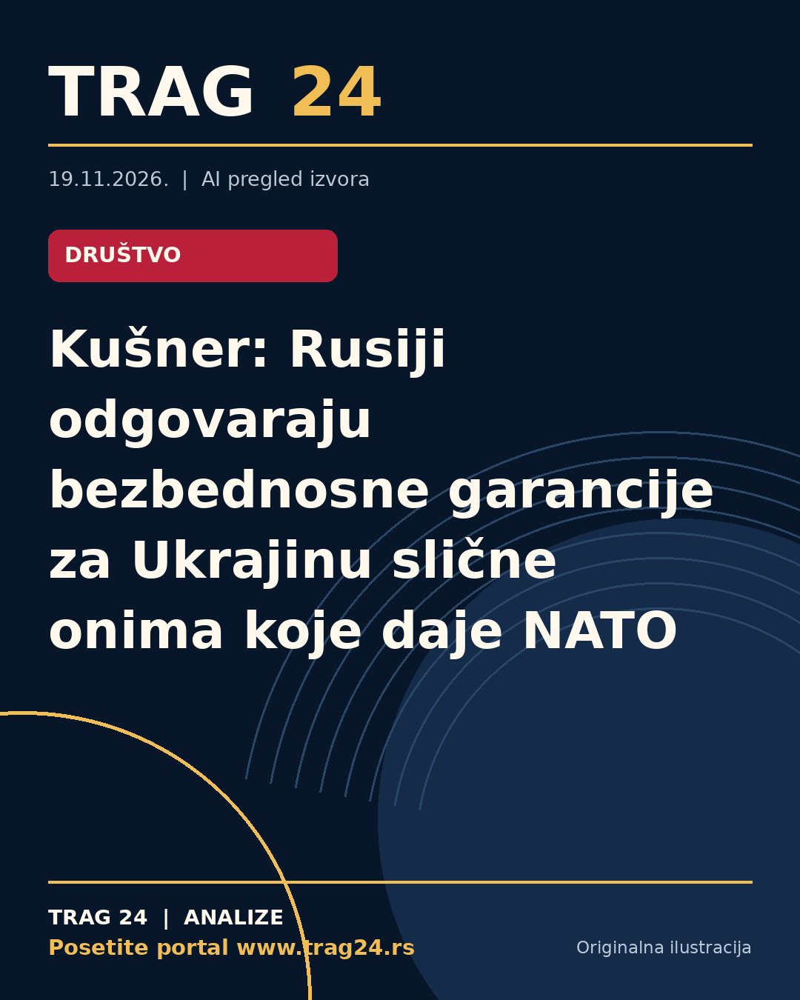

Kušner: Rusiji odgovaraju bezbednosne garancije za Ukrajinu slične onima koje daje NATO

ŠTA SE DOGODILO
Američki izaslanik Džared Kušner izjavio je u Berlinu da Rusija prihvata ideju bezbednosnih garancija za Ukrajinu koje bi bile slične onima koje daje NATO, kao uslov za okončanje rusko-ukrajinskog sukoba koji traje gotovo pet godina. Istog dana, američki predsednik Donald Tramp je u Kini razmenjivao mišljenja sa liderima Rusije i Kine, Vladimirom Putinom i Sijem Đinpingom, o mogućnostima mirnog rešavanja situacije u Ukrajini.
HRONOLOGIJA
Tokom dana, Kušner i drugi američki izaslanik Stiv Vitkof razgovarali su u Berlinu sa preko 40 evropskih lidera, članica Koalicije voljnih, skupine zemalja koje podržavaju Ukrajinu. Sastanku je prethodio treći ukrajinski napad u četiri dana na Kerčki most, strateški objekat koji povezuje Rusiju sa anektiranim poluostrvom Krim, što je privremeno zaustavilo železnički i drumski saobraćaj preko mosta. Železnički saobraćaj je kasnije obnovljen, prema izveštajima ruskih izvora. Ukrajinski napadi su izvedeni neposredno pre važnih pregovora u Berlinu i Šenženu, gde je Tramp razgovarao sa Putinom i Si Đinpingom.
ŠTA NAVODE IZVORI
Kušnerovi i Vitkofovi razgovori u Berlinu usmereni su na jačanje koordinacije između Ukrajine, Evrope i SAD u pogledu trajnog rešenja sukoba i uspostavljanja jedinstvenog stava o ključnim elementima mira. Kušner je naglasio potrebu za zajedničkom pripremom nove runde multilateralnih pregovora. Putin je izjavio da će Rusija odgovoriti na ukrajinske napade, ističući da je Kerčki most civilna imovina. Tramp je Putina označio kao svog prijatelja, dok je njegov odnos sa ukrajinskim predsednikom Volodimirom Zelenskim narušen, a ukrajinski zvaničnici izrazili su zabrinutost zbog mogućeg dogovora između Trampa i Putina koji bi mogao uticati na sudbinu Ukrajine. Evropski saveznici su zabrinuti zbog ruske agresije i uticaja Trampovih direktnih razgovora sa Putinom.
ŠTA JE POTVRĐENO
Potvrđeno je da je održan sastanak Koalicije voljnih u Berlinu sa više od 40 evropskih lidera i američkim izaslanicima Kušnerom i Vitkofom, kao i učešće ukrajinskog predsednika Zelenskog. Potvrđeno je i da je Tramp razgovarao u Kini sa Putinom i Si Đinpingom o Ukrajini. Ukrajinski napadi na Kerčki most su izvedeni neposredno pre nego što su započeti berlinski pregovori, a saobraćaj preko mosta je privremeno bio zaustavljen i kasnije obnovljen. Kušner je izneo zvanični stav o potrebi bezbednosnih garancija za Ukrajinu prihvatljivih Rusiji, sličnih NATO aranžmanima.
ŠTA NIJE POTVRĐENO
Nije potvrđeno šta je tačno razgovarano tokom video veze Donalda Trampa sa evropskim liderima na sastanku u Berlinu, niti precizni detalji njegovih razgovora sa Putinom i Si Đinpingom u Šenženu. Takođe, nije potvrđeno kakav će oblik i sadržaj imati budući bezbednosni aranžmani ili da li su dogovorene konkretne mere za okončanje rata. Nema potvrde o efektima ili reakcijama na ukrajinske napade sa međunarodnog diplomatskog nivoa izvan Putinovih izjava o potrebi odgovora Rusije.
ŠTA OSTАJE OTVORENO: Ostaje otvoreno pitanje daljih pregovaračkih procesa i mogućeg ishoda veze između bezbednosnih garancija za Ukrajinu i ruskih zahteva, kao i uloga SAD i njihovih saveznika u daljem vođenju razgovora. Takođe, ostaje nejasno kako će napadi na Kerčki most uticati na diplomatske odnose i ratni tok. Neizvesna je i budućnost američke podrške Ukrajini pod novom administracijom Kongresa SAD i uloge Trampa u vođenju spoljne politike prema Ukrajini i Rusiji.
Izvori
- https://www.danas.rs/svet/kusner-rusiji-odgovaraju-bezbednosne-garancije-za-ukrajinu-slicne-onima-koje-daje-nato/
- https://www.kurir.rs/planeta/10167340/KUSNER-Rusiji-odgovaraju-bezbednosne-garancije-za-Ukrajinu-slicne-onima-koje-daje-NATO
- https://nova.rs/vesti/svet/rusiji-odgovaraju-bezbednosne-garancije-za-ukrajinu-slicne-onima-koje-daje-nato/
Ova analiza je pripremljena uz pomoć veštačke inteligencije na osnovu javno dostupnih izvora. Navodi izvora nisu nužno nezavisno potvrđeni.